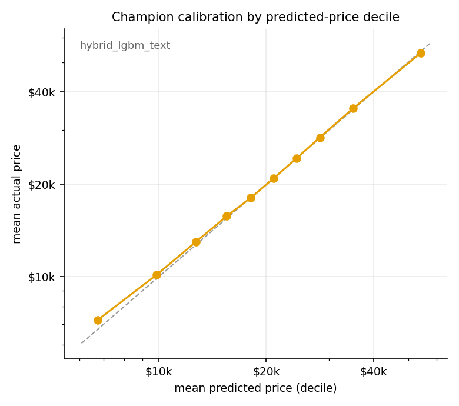
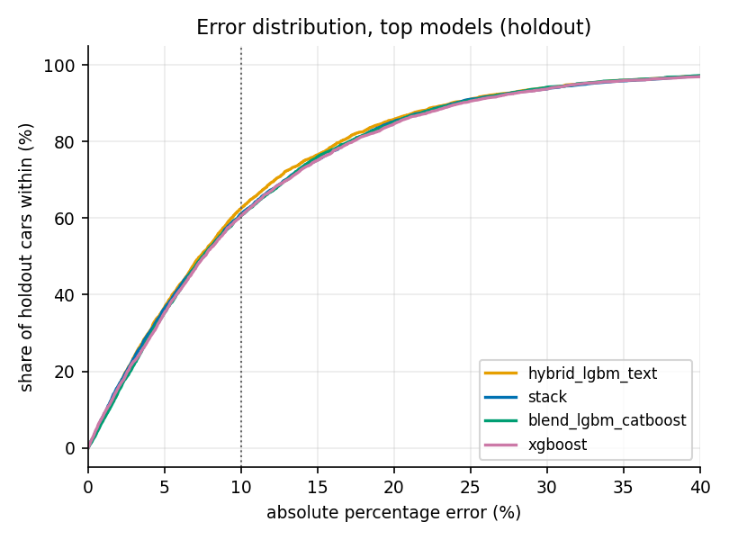

Automated valuation of used vehicles is usually reported as a single accuracy number for a single model class, with little attention to whether the evaluation could leak target information, whether the reported ranking of methods would survive a statistical test, or whether the model can state its own uncertainty honestly. We present AppraiseNet, a study of thirteen price estimators in six families (linear, instance-based, bagged trees, gradient boosting, deep tabular networks and hybrids) trained on 38,758 curated United States used-vehicle listings, together with the production system that operates the result. All models are compared under the AppraiseNet Evaluation Protocol: a fixed 10 percent holdout scored exactly once per model, five-fold out-of-fold selection, and every fitted statistic, including an engineered trim-positioning feature, re-learned inside each fold. Split-conformal calibration gives every model a distribution-free 80 percent prediction interval, and model differences are judged with a paired bootstrap on the shared holdout rather than by comparing point estimates. Gradient boosting dominates the single-model field, both deep architectures land behind it, and the best model overall is a hybrid that corrects a LightGBM base with a bounded ridge model over TF-IDF features of the listing description: 10.75 percent holdout MAPE (95 percent CI 10.40 to 11.12), a median absolute error of 7.33 percent, and 62.4 percent of cars priced within 10 percent, a statistically significant 0.49-point improvement over its own tabular base. Empirical interval coverage lies between 79.6 and 80.9 percent for all thirteen models against the 80 percent target, and conformalised quantile regression attains 80.2 percent coverage at a median width of 33.3 percent of price. The study ships as an operable system with a versioned registry, promote-or-rollback retraining, an idempotent daily data-ingest path, drift monitoring and a serving API.
Index Terms: Price estimation, used vehicles, tabular machine learning, gradient boosting, conformal prediction, evaluation methodology, text mining, MLOps.
Pricing a used car is a canonical applied regression problem: the target is continuous and strictly positive, the features mix high-cardinality categoricals (make, model, trim) with numerics (mileage, age, engine specifications) and free text (the listing description), and errors carry direct monetary meaning for buyers, sellers and lenders. Commercial valuation guides answer it at scale, but the academic record is thin in three specific ways. First, published comparisons of learning methods for car prices are frequently vulnerable to target leakage: statistics fitted on the full dataset, engineered features that summarise prices across the evaluation rows, or repeated scoring of the same test split during development [5, 6]. Second, method rankings are almost always asserted from two point estimates, although the difference between well-tuned learners on the same data is often smaller than the resampling noise of the split [7]. Third, point estimates are reported without calibrated uncertainty, although a buyer needs to know whether “$17,400” means plus or minus $800 or plus or minus $5,000.
This paper treats these three gaps as the object of study. We compare thirteen estimators in six families under one fixed procedure, the AppraiseNet Evaluation Protocol (Section 4), on 38,758 curated real listings (Section 3); we attach a distribution-free 80 percent prediction interval to every model via split-conformal calibration and an adaptive interval to the production model via conformalised quantile regression [18, 19, 20] (Section 6); and we judge every claimed difference with a paired bootstrap over the shared holdout [8] (Section 7). Finally, because a study that cannot be operated tends to decay, the reference implementation is a production system: a versioned model registry with a promote-or-rollback guardrail, an idempotent ingest path that grows the corpus daily, drift monitoring and a serving API (Section 9).
The contributions are:
A controlled comparison of six model families for used-vehicle price estimation on 38,758 curated listings, under a protocol in which every fitted statistic, including an engineered trim-positioning feature that would otherwise leak the target, is re-learned inside each cross-validation fold, and the holdout is scored exactly once per model.
Evidence that listing text carries pricing signal beyond the structured specification: a bounded text-residual hybrid improves its own LightGBM base by 0.49 MAPE points, a statistically significant margin, and outperforms a stacked ensemble of three tree learners.
Calibrated uncertainty for every model: empirical holdout coverage between 79.6 and 80.9 percent against an 80 percent target across all thirteen models, and a production interval with 80.2 percent coverage at a median width of 33.3 percent of price.
A statistical reading of the leaderboard: with roughly 3,893 holdout cars, differences below about a quarter of a MAPE point are not resolvable, and the paired bootstrap reports which rankings the data actually supports.
An operable reference system in which every number in this paper regenerates from persisted artifacts with one command, and the corpus, models and monitoring continue to evolve after publication.
Hedonic price theory models the price of a differentiated good as a function of its attributes [1]; used-vehicle valuation is a natural instance. Applied studies have compared regression methods for car prices, typically on small or scraped datasets: Pudaruth [2] evaluates classical learners on a few hundred listings, Monburinon et al. [3] compare linear and tree ensembles on a larger German corpus, and Pal et al. [4] report random-forest accuracy on the Kaggle used-car corpus. These studies rarely control leakage explicitly, rarely test the significance of their rankings, and do not report calibrated intervals; those omissions motivate the present protocol.
On tabular learning, the question of whether deep networks beat gradient-boosted trees has a substantial recent literature. Entity embeddings for categoricals [14] and attention-based feature tokenisation [15] are the strongest general-purpose deep tabular designs, yet systematic comparisons find well-configured boosting [11, 12, 13] still ahead on medium-sized heterogeneous tables [16, 17]. Our results reproduce this finding on a real commercial task, with both deep models implemented natively rather than through wrapper libraries, and we quantify the gap with confidence intervals rather than single numbers.
For uncertainty, conformal prediction supplies finite-sample, distribution-free coverage guarantees under exchangeability [18, 19, 21]; conformalised quantile regression [20] adds per-example adaptive widths. On methodology, Kaufman et al. [5] catalogue leakage mechanisms, Cawley and Talbot [6] analyse selection bias in evaluation, and Dietterich [7] argues for statistical tests over point comparisons. On the systems side, Sculley et al. [22] describe the operational debt of learning systems, and model cards [23] document intended use; both practices are implemented in the released system.
The corpus contains 38,758 used-vehicle listings from the United States market, collected from public marketplaces and dealer websites during July and August 2026, spanning dealer and private-party sellers, asking prices from $2,000 to $100,000 and model years 1990 and later. The corpus is proprietary and is not distributed; all identity was removed before the data reached this project: no vehicle identification numbers, no listing identifiers, no seller or platform names, locations reduced to state and three-digit postal prefix, and free text scrubbed of telephone numbers, addresses, e-mail addresses and URLs.
Each raw listing record carried roughly 160 fields: site-specific presentation fields, duplicated specifications in inconsistent formats, sparse single-source columns and seller-entered attributes that contradict the vehicle’s build record. Curation reduced this to a 26-column modelling table through eight documented steps: (i) field triage and vocabulary normalisation; (ii) specification enrichment through the public government vehicle-decoder API, which overrides seller-entered attributes and contributes weight class, series, electrification, driver-assistance and plant-of-manufacture fields; (iii) removal of placeholder and token prices, including listings that advertise a down payment rather than a price, detected from the listing wording; (iv) removal of parts vehicles and non-runners by text rules; (v) the price-band and model-year gates above with odometer plausibility checks; (vi) per-vehicle deduplication across relistings and syndication; (vii) a label-noise quarantine that excludes listings priced below 0.35 or above 2.5 times a preliminary fair-value fit, so typos and misdescribed vehicles cannot poison the target; and (viii) audited merges across collection waves. The same gates guard the production ingest path (Section 9).
The modelling table contains fourteen categoricals (make, model, trim, body style, drivetrain, transmission, fuel type, electrification, weight class, series, plant country, adaptive cruise, seller type, region state), eight numerics (mileage, age, miles per year, doors, cylinders, engine power, displacement, original price where shown) and the scrubbed description text. All models are trained on \(y=\log(\text{price})\): price errors are relative by nature, a $500 miss being severe on a cheap car and negligible on an expensive one, so log space makes errors comparable across the whole price band, and the exponential of a symmetric interval in log space yields the asymmetric dollar interval a buyer needs.
A synthetic generator with the identical schema and plausible price physics substitutes for the corpus in the released repository: the test suite, the continuous-integration pipeline and any reader run the complete study end to end without the private data, with every output clearly labelled synthetic.
Every model is evaluated under one fixed procedure.
A 10 percent holdout (3,893 listings) is drawn once with a fixed seed and scored exactly once per model; it participates in no selection decision. The remaining 34,865 listings form the training partition, assigned to five cross-validation folds.
Every fitted statistic is learned inside the fold: categorical vocabularies (unseen levels at evaluation time become missing values, never new categories), imputation medians, standardisation moments, and the one engineered categorical, trim tier, which ranks a trim’s median log price within its model line (top, upper, mid, base; groups with fewer than four training examples fall back to unknown). Computed on the full dataset this feature would leak the target into the inputs; the protocol therefore treats it as a model parameter, refitted thirteen times per model, once per fold and once for the final fit.
Out-of-fold predictions supply the selection metrics and the conformal calibration residuals. Each model is then refitted on the full training partition and predicts the holdout; only those numbers are quoted as performance. Metrics are computed in price space: per-car absolute percentage error \(\mathrm{APE}_i=\lvert\exp(p_i-y_i)-1\rvert\), its mean (MAPE) and median, the share of cars within 10 percent, \(R^2\) in log space, and interval coverage and width.
Every model runs with fixed, documented hyper-parameters (Section 5); the study compares families under equal conditions rather than tuning budgets. One feature-space object serves each family its natural encoding of the same information: frozen-level pandas categoricals for the boosting libraries, raw category strings for CatBoost, ordinal codes with median imputation for the bagged trees, a compact top-40 one-hot with standardised numerics for the linear and instance models, and integer codes with standardised numerics for the networks.
The zoo spans six families; complete hyper-parameters are in the repository’s methods document.
Ridge regression (\(\alpha=3\)) and elastic net (\(\alpha=10^{-3}\), \(\ell_1\) ratio 0.3) on the one-hot view, and a \(k\)-nearest-neighbour model (\(k=15\), distance weighting) that formalises the practitioner’s “find comparable cars” heuristic.
RandomForest (300 trees) and ExtraTrees (400 trees), both with feature subsampling.
LightGBM (1,500 rounds, 63 leaves, learning rate 0.03) [11], XGBoost (2,000 trees, depth 8, native categorical support) [12] and CatBoost (2,500 iterations, depth 8) [13].
An entity-embedding multilayer perceptron [14] (per-categorical embeddings of dimension \(\min(32,\max(4,\lceil 1.6\,c^{0.56}\rceil))\) for cardinality \(c\), a 256-128 GELU trunk with dropout) and a compact FT-Transformer [15] (token dimension 48, three pre-norm encoder layers, six heads, a CLS token pooled by a linear head), both implemented in PyTorch in roughly 150 lines. Both train with AdamW under a cosine schedule, Huber loss, early stopping on a validation slice, and a target standardised to z-space, which converges in a handful of epochs where raw-target training needs dozens.
Three combinations test whether model diversity or extra signal buys accuracy. A blend averages LightGBM and CatBoost. A stacked ensemble fits a ridge meta-learner on three-fold inner out-of-fold predictions of LightGBM, XGBoost and ExtraTrees, so the meta-learner never sees a base prediction for a row that base was fitted on. The text-residual hybrid fits a TF-IDF ridge (word unigrams and bigrams, minimum document frequency 20, at most 20,000 features) on the inner out-of-fold residuals of a LightGBM base, and at inference adds its correction clipped to \(\pm 0.15\) in log space, roughly \(\pm 14\) percent in price: the listing text may nudge a price, never invent one.
Every model receives a split-conformal interval [18, 19]. With out-of-fold absolute residuals \(r_1,\dots,r_n\) in log space, the widening constant is the corrected quantile \(q=\mathrm{Quantile}\bigl(r,\lceil (n{+}1)\,0.8\rceil/n\bigr)\), and the interval for a holdout car with prediction \(p\) is \([\exp(p-q),\,\exp(p+q)]\); marginal 80 percent coverage is guaranteed under exchangeability, and Section 8 verifies it empirically. The production model additionally uses conformalised quantile regression [20]: LightGBM quantile models for the 10th and 90th percentiles, conformity scores \(s_i=\max(\hat{l}_i-y_i,\,y_i-\hat{u}_i)\) on out-of-fold predictions, and both quantiles widened by the corrected quantile of \(s\). CQR keeps the guarantee while letting the width adapt per car: wide for a rare old truck, narrow for a common commuter sedan.
All thirteen models predict the same 3,893 holdout cars, so differences are judged on paired errors [7]. A paired bootstrap [8] resamples holdout indices 4,000 times, applying the same draw to every model, and yields a 95 percent percentile interval for each model’s MAPE and for its MAPE gap to the champion. A model whose gap interval includes zero is reported as statistically tied with the champion; the study never claims a ranking the data cannot support.
| Model | Family | CV | Holdout | 95 % CI | Median | \(\le\)10 % | Coverage | Width |
|---|---|---|---|---|---|---|---|---|
| LightGBM + text residual | hybrid | 10.91 | 10.75 | [10.40, 11.12] | 7.33 | 62.4 | 79.8 | 33.3 |
| Stacked ensemble | hybrid | 11.16 | 11.02 | [10.65, 11.39] | 7.58 | 61.1 | 79.7 | 34.3 |
| LightGBM+CatBoost blend | hybrid | 11.14 | 11.08 | [10.71, 11.45] | 7.48 | 60.6 | 79.9 | 34.0 |
| XGBoost | boosting | 11.37 | 11.19 | [10.81, 11.57] | 7.59 | 60.6 | 79.9 | 34.8 |
| LightGBM | boosting | 11.40 | 11.24 | [10.88, 11.62] | 7.63 | 60.6 | 79.6 | 34.9 |
| CatBoost | boosting | 11.58 | 11.58 | [11.19, 11.98] | 8.05 | 58.2 | 80.0 | 35.5 |
| Embedding MLP | deep tabular | 12.19 | 11.94 | [11.55, 12.34] | 8.44 | 56.7 | 79.9 | 37.2 |
| FT-Transformer | deep tabular | 12.76 | 12.36 | [11.95, 12.76] | 8.90 | 54.7 | 80.9 | 39.9 |
| ExtraTrees | bagged trees | 13.11 | 12.88 | [12.44, 13.32] | 8.54 | 55.6 | 79.9 | 39.9 |
| RandomForest | bagged trees | 13.73 | 13.49 | [13.03, 13.97] | 9.24 | 53.0 | 80.1 | 41.9 |
| \(k\)-NN comparables | instance | 15.54 | 15.22 | [14.74, 15.71] | 10.79 | 47.0 | 80.5 | 47.9 |
| Ridge | linear | 18.90 | 18.93 | [18.34, 19.53] | 14.18 | 37.7 | 80.1 | 58.7 |
| Elastic net | linear | 19.32 | 19.42 | [18.79, 20.04] | 14.43 | 36.5 | 79.8 | 60.2 |
Table 1 and Fig. 1 give the complete picture; four findings stand out.
The champion is the text-residual hybrid at 10.75 percent holdout MAPE (95 percent CI 10.40 to 11.12), a median absolute error of 7.33 percent and 62.4 percent of cars priced within 10 percent of the asking price. Its 0.49-point improvement over its own LightGBM base is statistically significant, and it beats the stacked ensemble (11.02 percent) whose gap interval, 0.15 to 0.38 points, excludes zero. The bounded correction design matters for trust: because the text stage is fitted on inner out-of-fold residuals and clipped in log space, marketing language can adjust a valuation by at most about 14 percent and cannot fabricate one.
The three boosting libraries score 11.19 to 11.58 percent, statistically indistinguishable between LightGBM and XGBoost. The entity-embedding MLP (11.94 percent) and the FT-Transformer (12.36 percent) are competitive but significantly behind boosting, reproducing the pattern reported in controlled tabular comparisons [16, 17] on a real commercial task. The instance-based comparables model (15.22 percent) and the linear models (up to 19.42 percent) trail far behind: interactions among make, model, trim, age and mileage are the heart of the problem.
Empirical holdout coverage of the split-conformal intervals lies between 79.6 and 80.9 percent for all thirteen models against the 80 percent target: the guarantee is not decorative. What differs is width, from 33.3 percent of price for the champion to roughly 60 percent for the linear models: a second, decision-relevant axis of model quality that MAPE alone does not expose. The production CQR interval attains 80.2 percent coverage at a median width of 33.3 percent of price, with per-car adaptivity.
With 3,893 holdout cars, MAPE differences below roughly a quarter of a point are inside the paired-bootstrap noise. The top of Table 1 should therefore be read as one significant champion followed by a closely ordered group, not as thirteen settled ranks.
| Segment | \(n\) | Text hybrid | Stack | Blend | XGBoost | LightGBM |
|---|---|---|---|---|---|---|
| under $10k | 668 | 18.1 | 18.6 | 18.5 | 19.3 | 19.0 |
| $10k-20k | 1,384 | 10.6 | 11.2 | 11.1 | 11.3 | 11.2 |
| $20k-40k | 1,447 | 8.0 | 8.1 | 8.2 | 8.1 | 8.3 |
| over $40k | 399 | 8.9 | 8.5 | 9.1 | 8.6 | 9.0 |
| age 0-3y | 1,062 | 7.0 | 7.0 | 7.3 | 6.8 | 7.2 |
| age 4-10y | 1,841 | 9.8 | 10.3 | 10.4 | 10.5 | 10.5 |
| age 11y+ | 990 | 16.4 | 16.6 | 16.4 | 17.2 | 17.0 |
| 150k+ miles | 256 | 16.8 | 16.8 | 16.2 | 17.6 | 17.0 |
| private seller | 197 | 21.0 | 20.3 | 19.9 | 20.3 | 20.9 |


Table 2 slices the holdout along the axes where valuation models usually hide their weaknesses. The pattern is shared by every strong model: recent cars in the middle of the price band are easy (MAPE near 7 to 8 percent), while cars under $10,000, cars older than ten years, cars beyond 150,000 miles and private-party sales are hard (16 to 21 percent). These segments are exactly where condition, maintenance history and seller behaviour, which listings describe only partially, dominate the price. Fig. 2 shows that the champion is nevertheless calibrated across the predicted-price range, and Fig. 3 shows the error distributions of the strongest models.
The study is operated, not archived. Storage is one URL that accepts an embedded database file or a PostgreSQL connection string; every reader and writer in the package goes through the same layer. New listings enter through an idempotent ingest command: rows pass the same quality gates as training, are fingerprinted on their identifying fields, and only never-seen listings are appended, with every run audited, so a daily job can never duplicate or dirty the corpus. A retraining command fits the production configuration and promotes it only if its holdout MAPE is within 0.3 points of the serving model, otherwise the previous version keeps serving; versions are semantic and archived for rollback. The serving API returns the point price with its calibrated interval, hot-reloads on promotion and logs every prediction; a drift monitor compares recent traffic against the training reference with population-stability indices and warn and alert thresholds.
One deployment decision deserves note: production serves the best text-free configuration (LightGBM with CQR) rather than the study champion, because the prediction API receives a structured specification without a listing description. The deployed model is selected for the inputs it will actually see; the text hybrid remains the reference result for description-bearing surfaces.
The target is the asking price, not the transaction price; the model estimates what comparable cars are listed for, and dealer negotiation margins are outside the data. The corpus covers the United States market in one collection window, capped at $100,000 and model year 1990 or later; collector and exotic vehicles are out of scope by design. The protocol uses a single fixed holdout with bootstrap uncertainty rather than repeated re-splits, a deliberate trade against the multi-hour cost of the full study; the cross-validation column of Table 1 provides the complementary resampling view, and the two agree closely for every model. Hyper-parameters are fixed per family rather than tuned per model, so the comparison bounds each family’s performance under sensible defaults rather than its ceiling. Vehicle condition and accident history are observed only through the listing text, which Section 8 shows is precisely where the remaining error concentrates.
Under a protocol that removes leakage by construction, attaches calibrated uncertainty to every model and tests every claimed difference, used-vehicle price estimation on curated listings resolves clearly: gradient boosting is the strongest single-model family, deep tabular architectures land measurably behind it, and the best result comes from letting the listing text correct a boosted base within safe bounds, reaching 10.75 percent MAPE with 80 percent intervals whose coverage holds empirically. The released system keeps the study alive: the corpus grows through gated daily ingest, retraining is guarded by promotion rules, and every number in this paper regenerates from persisted artifacts with one command. Future work targets the hard segments with explicit condition modelling, transaction-price supervision where obtainable, and pretrained language representations for the text stage.
S. Rosen, “Hedonic prices and implicit markets: Product differentiation in pure competition,” Journal of Political Economy, vol. 82, no. 1, pp. 34 to 55, 1974.
S. Pudaruth, “Predicting the price of used cars using machine learning techniques,” International Journal of Information and Computation Technology, vol. 4, no. 7, pp. 753 to 764, 2014.
N. Monburinon, P. Chertchom, T. Kaewkiriya, S. Rungpheung, S. Buya, and P. Boonpou, “Prediction of prices for used car by using regression models,” in Proc. ICBIR, 2018, pp. 115 to 119.
N. Pal, P. Arora, P. Kohli, D. Sundararaman, and S. S. Palakurthy, “How much is my car worth? A methodology for predicting used cars’ prices using random forest,” in Advances in Information and Communication Networks, Springer, 2019, pp. 413 to 422.
S. Kaufman, S. Rosset, C. Perlich, and O. Stitelman, “Leakage in data mining: Formulation, detection, and avoidance,” ACM TKDD, vol. 6, no. 4, 2012.
G. C. Cawley and N. L. C. Talbot, “On over-fitting in model selection and subsequent selection bias in performance evaluation,” JMLR, vol. 11, pp. 2079 to 2107, 2010.
T. G. Dietterich, “Approximate statistical tests for comparing supervised classification learning algorithms,” Neural Computation, vol. 10, no. 7, pp. 1895 to 1923, 1998.
B. Efron, “Bootstrap methods: Another look at the jackknife,” The Annals of Statistics, vol. 7, no. 1, pp. 1 to 26, 1979.
L. Breiman, “Random forests,” Machine Learning, vol. 45, no. 1, pp. 5 to 32, 2001.
P. Geurts, D. Ernst, and L. Wehenkel, “Extremely randomized trees,” Machine Learning, vol. 63, no. 1, pp. 3 to 42, 2006.
G. Ke, Q. Meng, T. Finley, T. Wang, W. Chen, W. Ma, Q. Ye, and T.-Y. Liu, “LightGBM: A highly efficient gradient boosting decision tree,” in Proc. NeurIPS, 2017.
T. Chen and C. Guestrin, “XGBoost: A scalable tree boosting system,” in Proc. KDD, 2016, pp. 785 to 794.
L. Prokhorenkova, G. Gusev, A. Vorobev, A. V. Dorogush, and A. Gulin, “CatBoost: Unbiased boosting with categorical features,” in Proc. NeurIPS, 2018.
C. Guo and F. Berkhahn, “Entity embeddings of categorical variables,” arXiv:1604.06737, 2016.
Y. Gorishniy, I. Rubachev, V. Khrulkov, and A. Babenko, “Revisiting deep learning models for tabular data,” in Proc. NeurIPS, 2021.
R. Shwartz-Ziv and A. Armon, “Tabular data: Deep learning is not all you need,” Information Fusion, vol. 81, pp. 84 to 90, 2022.
L. Grinsztajn, E. Oyallon, and G. Varoquaux, “Why do tree-based models still outperform deep learning on typical tabular data?” in Proc. NeurIPS Datasets and Benchmarks, 2022.
V. Vovk, A. Gammerman, and G. Shafer, Algorithmic Learning in a Random World. Springer, 2005.
J. Lei, M. G’Sell, A. Rinaldo, R. J. Tibshirani, and L. Wasserman, “Distribution-free predictive inference for regression,” JASA, vol. 113, no. 523, pp. 1094 to 1111, 2018.
Y. Romano, E. Patterson, and E. Candès, “Conformalized quantile regression,” in Proc. NeurIPS, 2019.
A. N. Angelopoulos and S. Bates, “Conformal prediction: A gentle introduction,” Foundations and Trends in Machine Learning, vol. 16, no. 4, pp. 494 to 591, 2023.
D. Sculley, G. Holt, D. Golovin, E. Davydov, T. Phillips, D. Ebner, V. Chaudhary, M. Young, J.-F. Crespo, and D. Dennison, “Hidden technical debt in machine learning systems,” in Proc. NeurIPS, 2015.
M. Mitchell, S. Wu, A. Zaldivar, P. Barnes, L. Vasserman, B. Hutchinson, E. Spitzer, I. D. Raji, and T. Gebru, “Model cards for model reporting,” in Proc. FAT*, 2019, pp. 220 to 229.